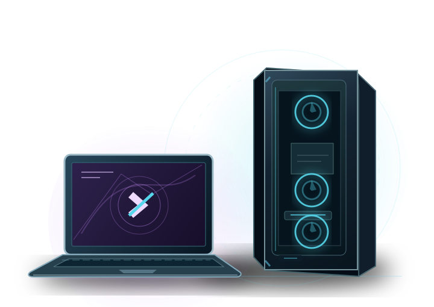

HỆ THỐNG 0101 / 02
TÙY BIẾN LINH KIỆN · TỐI ƯU HIỆU NĂNG
PC Desktop
Tự chọn linh kiện, lọc tương thích theo CPU và mainboard, đánh giá cấu hình hoặc nhận ba phương án tư vấn theo nhu cầu.
Tự BuildTư vấn thông minhSo sánh cấu hình
Khám phá cấu hình phù hợp với nhu cầu, ngân sách và phong cách của bạn. Không chỉ đề xuất thiết bị — DEXORA còn giải thích vì sao nên chọn.

Mỗi loại thiết bị có quy trình tư vấn riêng, được thiết kế theo đặc điểm sử dụng thực tế.
Tự chọn linh kiện, lọc tương thích theo CPU và mainboard, đánh giá cấu hình hoặc nhận ba phương án tư vấn theo nhu cầu.
Khám phá hướng tư vấn theo hiệu năng, màn hình, pin và khả năng nâng cấp. Kho laptop thực tế đang được hoàn thiện.
Những công cụ hỗ trợ bạn lựa chọn thiết bị có căn cứ, thay vì chỉ nhìn vào thông số quảng cáo.
Chọn nhiều tác vụ, game và phần mềm. Câu hỏi phụ thay đổi theo nhu cầu đã chọn.
Tiết kiệm, cân bằng và cao cấp; nêu rõ lý do chọn cùng các điểm cần đánh đổi.
Lọc CPU, mainboard, RAM và các linh kiện theo những thông số đã có trong kho dữ liệu.
Đối chiếu cấu hình theo giá tham khảo, mục đích sử dụng và ưu nhược điểm.
Một đề xuất tốt phải giúp bạn hiểu vì sao một linh kiện được chọn, điểm nào đáp ứng nhu cầu và điểm nào chưa đủ cơ sở kết luận.
Phân bổ ngân sách giữa GPU dành cho game 2K, CPU đủ đáp ứng đa nhiệm và RAM phù hợp để vừa chơi vừa làm việc. Cần kiểm tra benchmark cụ thể trước khi kết luận FPS.